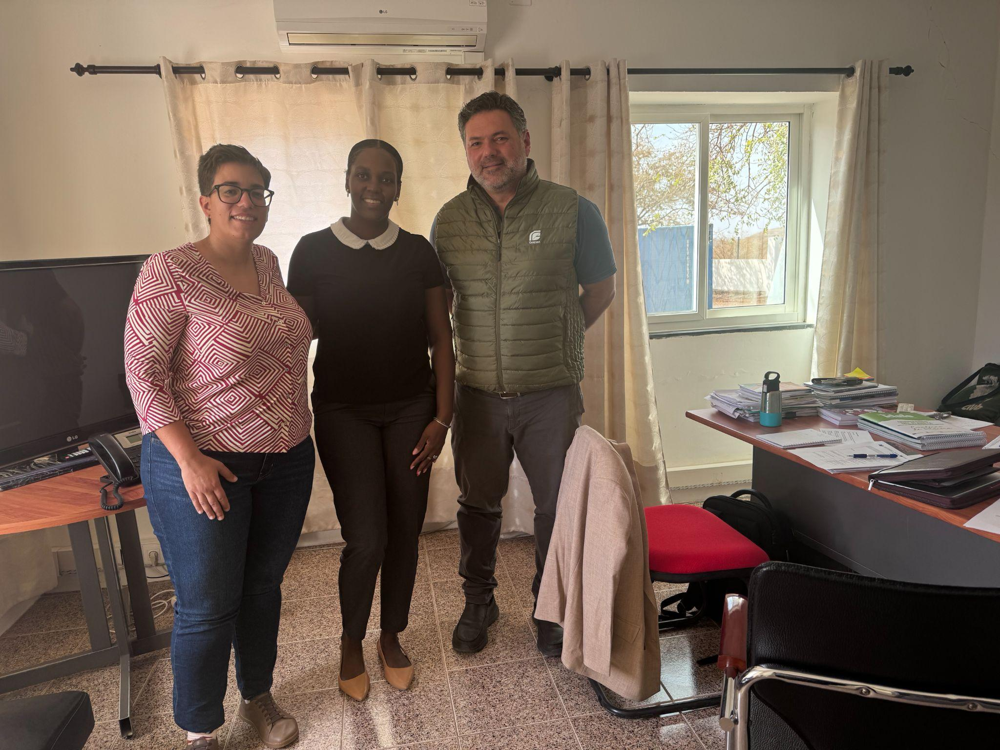

Coordinación
Leer noticia completa
Praia, Cabo Verde · 9 de marzo de 2026
MAC‑IDAFE celebra en Cabo Verde su primera reunión de coordinación con el Instituto Nacional de Meteorologia e Geofísica
El proyecto de cooperación territorial MAC‑IDAFE celebró en la ciudad de Praia su primera reunión presencial de coordinación con el INMG de Cabo Verde, un paso clave para reforzar la cooperación entre territorios de la Macaronesia.
Puntos clave
- Primera reunión presencial entre Canarias y Cabo Verde
- Puesta en común de la planificación de actividades
- Presentación de materiales educativos desarrollados en Canarias